|
|
| hard corals text index | photo index |
| Phylum Cnidaria > Class Anthozoa > Subclass Zoantharia/Hexacorallia > Order Scleractinia > Family Poritidae |
| Branching
pore coral Porites sp.* Family Poritidae updated Nov 2019 Where seen? This lumpy hard coral with tiny corallites and polyps is commonly seen on many of our shores. Features: Colonies 10-20cm, sometimes much larger. A boulder-shaped base with irregular lumps sometimes flattened sideways, with rounded, flat tops. Corallites tiny (0.1-0.2cm) hexagonal, packed close to one another. The tiny corallites are shallow and don't stick out of the surface. The surface thus often appears smooth with many tiny pores. Polyps are very tiny (0.1-0.2cm) with short body columns and short tentacles that are usually only extended at night. Colours seen include brown, green, bluish and purplish. Usually the colony is of one uniform colour. Branching pore coral often provides shelter for small animals such as tiny clams. May be mistaken for some branching Montipora coral species with ridges which look very similar. For convenience of display, all branching species that resemble Montipora are featured on the Montipora page. |
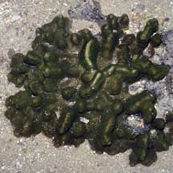 St. John's Island, May 06 |
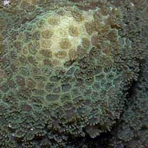 |
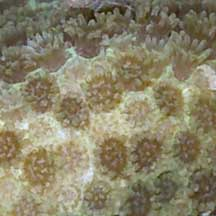 |
|
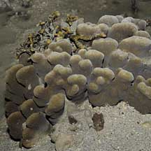 Pulau Hantu, Jan 10 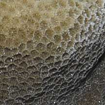 |
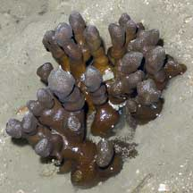 Beting Bronok, Aug 05 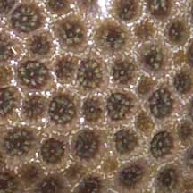 |
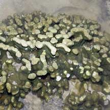 Pulau Hantu, Jul 07 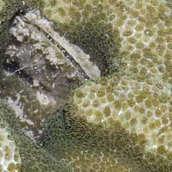 With a tiny clam wedged among the branches. |
*Species are difficult to positively identify without close examination.
On this website, they are grouped by external features for convenience of display.
| Branching pore corals on Singapore shores |
On wildsingapore
flickr
|
| Other sightings on Singapore shores |
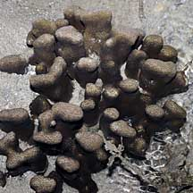 Pulau Pawai, Dec 09 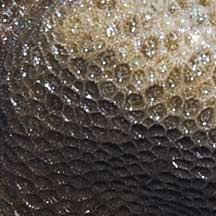 |
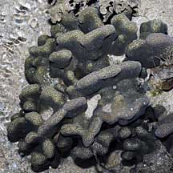 Pulau Pawai, Dec 09 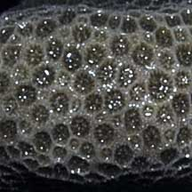 |
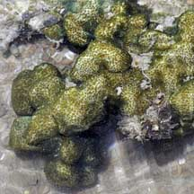 Pulau Pawai, Dec 09 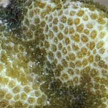 |
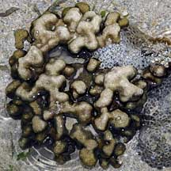 Terumbu Berkas, Jan 10 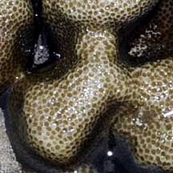 |
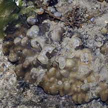 Terumbu Salu, Jan 10 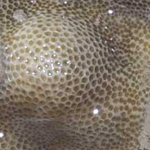 |
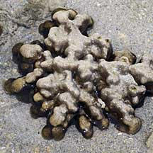 Terumbu Berkas, Jan 10 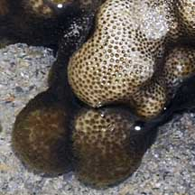 |
Terumbu Berkas, Jan 10 |
Terumbu Salu, Jan 10 |
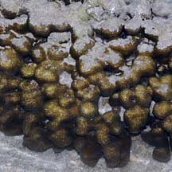 Pulau Senang, Jun 10 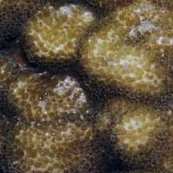 |
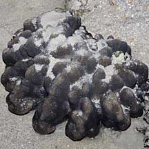 Pulau Salu, Aug 10 |